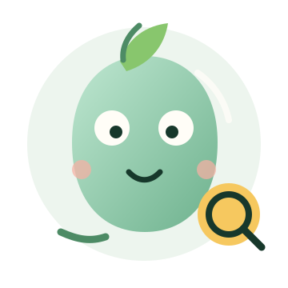
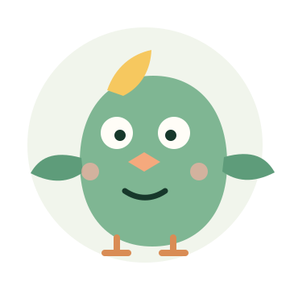
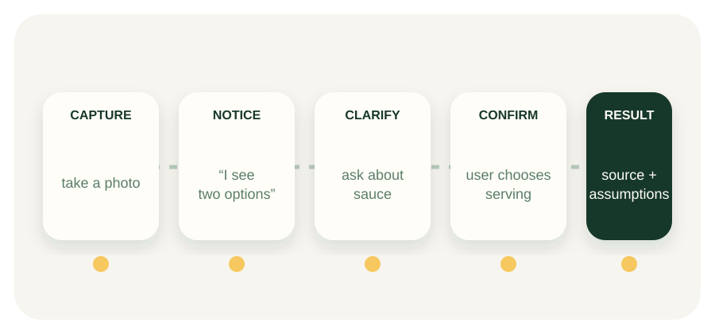

Warmth
Patience, curiosity, respect, and a calm response when the photo is ambiguous.
Research-led decision deck · 08 Aug 2026
The mascot should make SuperNutrition warmer and easier to use — without becoming a calorie judge, a doctor, or a reason to upload.
Recommendation: prototype a warm field-guide companionAudience: product and design stakeholders · Decision: which direction to prototype next

01 · Situation
They need a fast answer they can correct: what the photo suggests, what remains uncertain, and what they can decide next.
This follows SuperNutrition’s product contract: models propose; the user confirms; the catalog supplies the numbers.
Ask, edit, search manually, or continue without upload.
02 · Evidence
The recurring pattern across Finch, Waterllama, Plant Nanny, Wysa, and habit products is small action → understandable feedback → user-controlled progress.
Finch’s product rationale · Store ratings and company claims are directional, not mascot-specific causal evidence.
Take a photo. Correct a candidate. Choose a serving.
Show what was noticed, assumed, and still unknown.
Confirm, retry, search manually, or stop without guilt.
03 · Trust
Anthropomorphic health agents can increase social presence and trust — which also makes overconfidence a product risk.
Patience, curiosity, respect, and a calm response when the photo is ambiguous.
Source, confidence, assumptions, serving basis, consent, and editability.
04 · Shortlist
The research is stronger on character behavior than on any universal “healthy animal.”
Lead direction: a small, clearly non-human field-guide companion. The species remains a hypothesis.
Curious, warm, ownable, and explicit about uncertainty.
Lead to prototype
Light, observant, and companionable; strong Finch precedent.
Companion benchmark
Growth and nourishment without one animal or diet stereotype.
Neutral baseline05 · Change
Place it beside the high-friction moments: capture, ambiguity, correction, recovery, and the grounded result.
Keep the factual layer in text and structured UI. The character can point to evidence; it cannot become evidence.

06 · Guardrails
A lovable character becomes unsafe when missed meals, uncertain results, or privacy choices trigger guilt or dependency.
Systematic review of diet and fitness apps · Mascot and food-marketing evidence · W3C motion guidance
07 · Action
Build three matched flows. Keep the no-mascot version honest enough to win.
Success is calibrated trust and easier correction — not more agreement with a wrong candidate.
Next: safety-reviewed formative study with ~15–20 users.